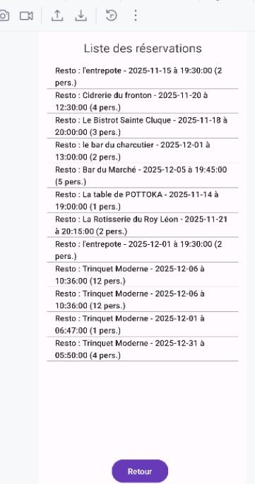
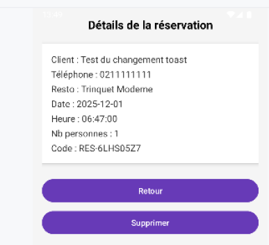

Ticket 11 – Passage de la vue ListReservation à DetailReservation et ajout du bouton Retour
Branche utilisée : iteration3_ticket11.
Ce ticket consiste à permettre la navigation entre la liste des réservations et le détail d’une réservation,
ainsi qu’à ajouter un bouton Retour pour faciliter la navigation.
Fonctionnalités principales
- Cliquer sur une ligne de ListReservation ouvre DetailReservationActivity avec toutes les informations de la réservation sélectionnée.
- Ajout d’un bouton Retour dans toutes les vues Réservation :
- Dans DetailReservationActivity, le bouton Retour permet de revenir à ListReservation.
- Dans ReservationActivity, le bouton Retour permet de revenir à la page précédente ou à l’accueil.
- Navigation implémentée avec Intent et finish() pour terminer correctement l’activité et revenir à la précédente.
Test fonctionnel
- Depuis l’écran d’accueil, accéder à la liste des réservations.
- Cliquer sur une réservation : DetailReservationActivity s’ouvre et affiche toutes les informations de la réservation.
- Cliquer sur le bouton Retour dans le détail : retour automatique à la liste des réservations.
- Cliquer sur le bouton Retour dans ReservationActivity : retour à la page précédente ou accueil.
- Vérification que la navigation fonctionne correctement sans quitter l’application ni perdre les données affichées.

